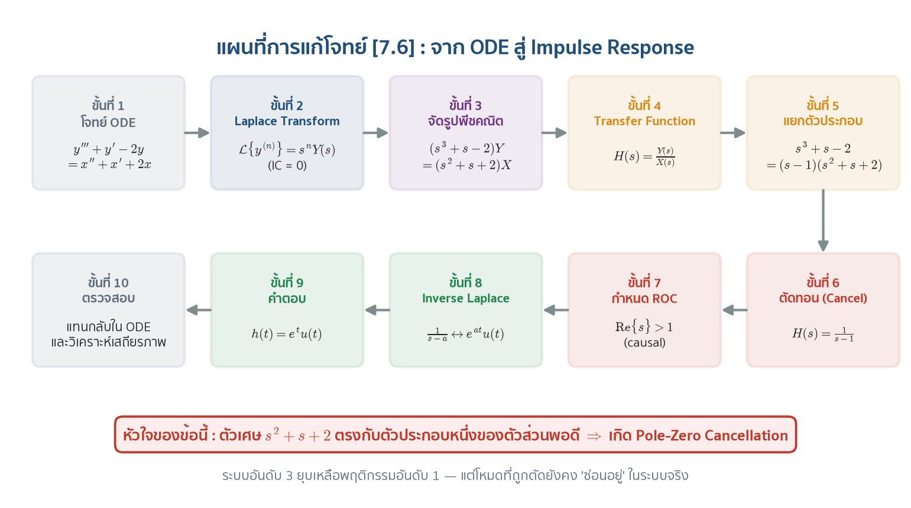
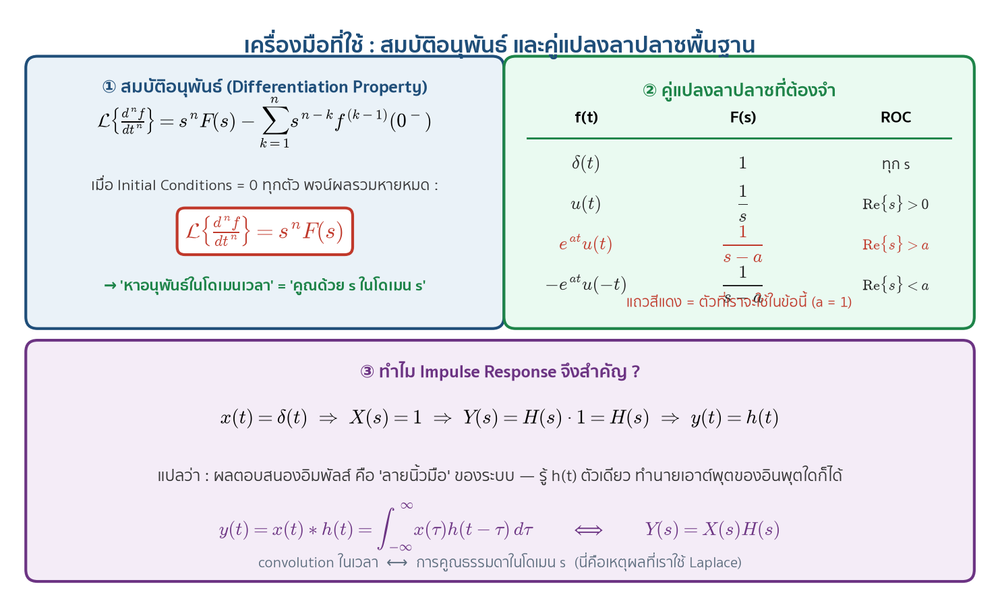
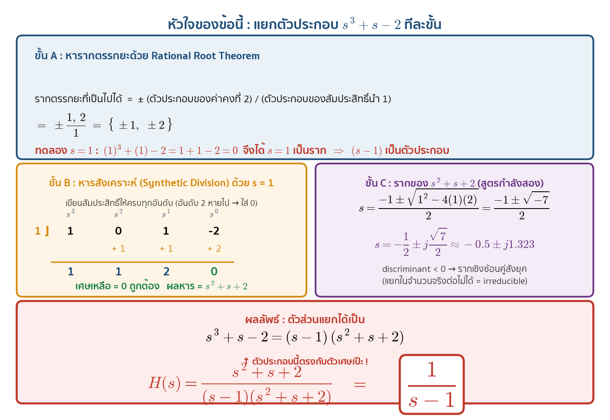
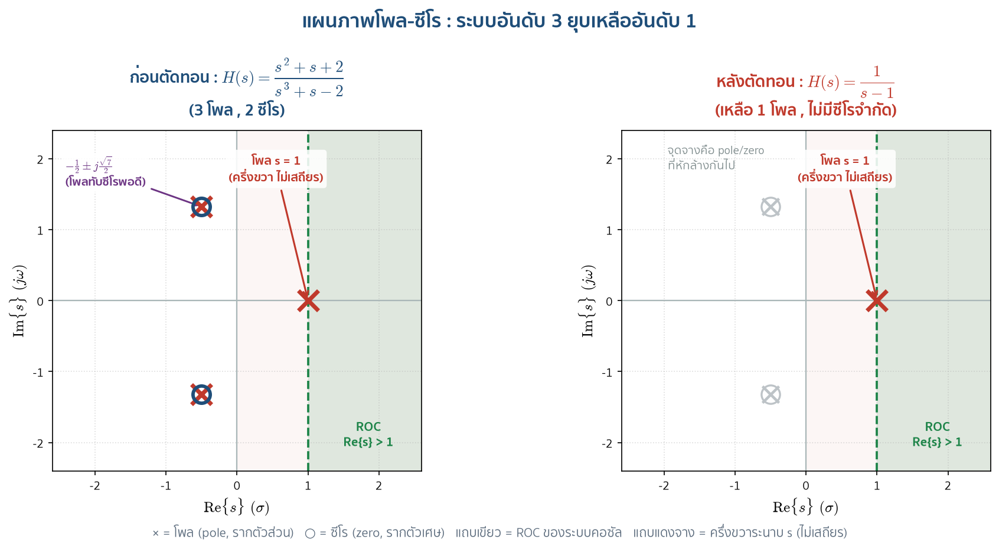
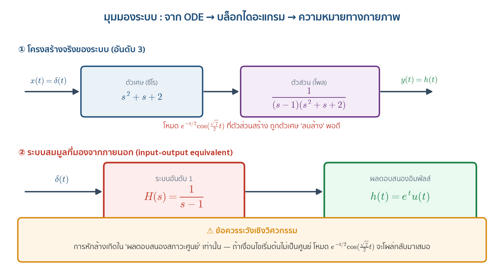
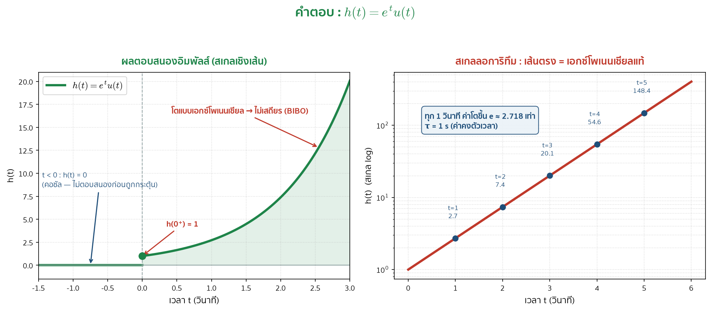
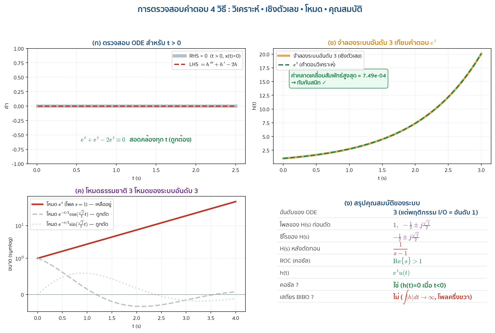
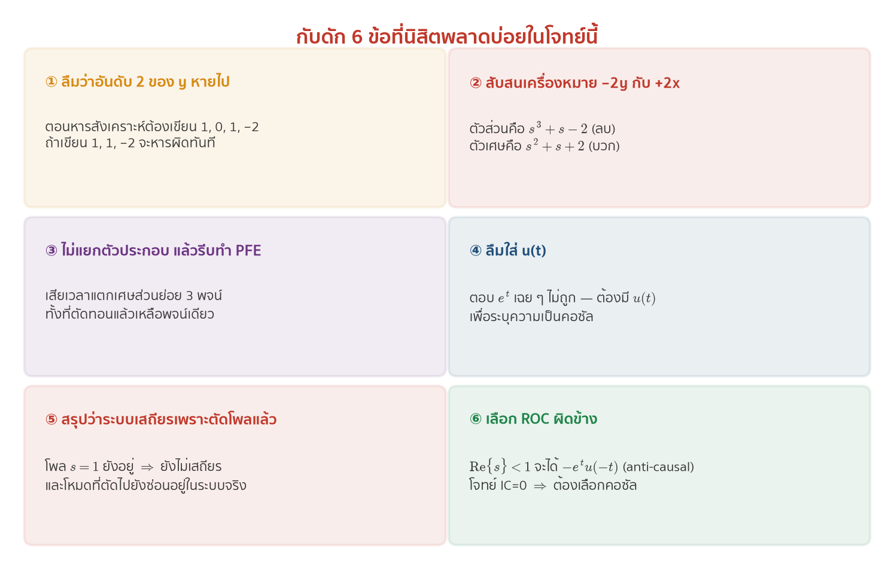

1) อ่านโจทย์ให้ถูก
กำหนด x(t) เป็น input, y(t) เป็น output และ initial conditions ทุกตัวเป็นศูนย์
ฝั่ง output
อันดับสูงสุดคือ 3 จึงเป็น ODE อันดับ 3
y''' + 0y'' + y' − 2y
ฝั่ง input
อันดับสูงสุดคือ 2
x'' + x' + 2x
2) แผนที่การแก้โจทย์

3) ทำไมใช้ Laplace transform
Laplace transform เปลี่ยนโจทย์อนุพันธ์ให้เป็นพีชคณิต โดยเมื่อ initial conditions เป็นศูนย์
แปลงฝั่ง y
แปลงฝั่ง x
จัดกลุ่ม
สร้าง transfer function

4) แยกตัวประกอบแบบไม่ข้ามขั้น
เราต้องแยก s³+s−2 ให้ได้ก่อน โดยอย่าลืมว่ารูปเต็มคือ s³+0s²+s−2
Rational Root Theorem
รากตรรกยะที่เป็นไปได้คือ ±1 และ ±2
ทดลอง s = 1
จึงรู้ว่า (s−1) เป็นตัวประกอบ
หารสังเคราะห์
ใช้สัมประสิทธิ์ 1, 0, 1, −2 จะได้ผลหาร s²+s+2 และเศษ 0
ผลการแยก

5) Pole–Zero Cancellation
ก่อนตัด
Poles: 1 และ −½ ± j√7/2
Zeros: −½ ± j√7/2
หลังตัด
เหลือ pole ที่ s=1 จุดเดียว
ระบบที่มองจากภายนอกจึงมีพฤติกรรมอันดับ 1


6) Inverse Laplace และ ROC
ในข้อนี้ a=1 และเลือก causal system จึงใช้ ROC ทางขวาของ pole
แล้วถ้าเลือก ROC ทางซ้ายล่ะ?
ถ้า Re{s}<1 จะได้ −eᵗu(−t) ซึ่งเป็น anti-causal response ไม่ใช่คำตอบ causal ที่ใช้ในโจทย์นี้

7) ตรวจสอบคำตอบให้ครบ
ตรวจสำหรับ t > 0
เมื่อพ้นจุด impulse แล้ว x(t)=0 และ h=eᵗ ทำให้
ตรวจ jump ที่ t=0
หลัง cancellation ระบบสมมูลคือ h'−h=δ(t) อินทิเกรตจาก 0⁻ ถึง 0⁺:
เพราะ causal response มี h(0⁻)=0 จึงได้ h(0⁺)=1 ตรงกับ e⁰=1

8) Causality และ Stability
เป็น causal
เพราะ h(t)=0 สำหรับ t<0 เนื่องจากมี u(t)
ไม่ BIBO stable
เพราะ ∫₀∞eᵗdt = ∞ และ pole s=+1 อยู่ใน right-half plane

9) แผนสอน 60 นาที
10) แบบทดสอบท้ายบท
เลือกคำตอบแล้วกด “ตรวจคำตอบ” คะแนนจะถูกคำนวณในเครื่องนี้เท่านั้น
สรุปบรรทัดเดียว
คุณสมบัติ: causal, ROC Re{s}>1, pole ที่ +1, ไม่ BIBO stable